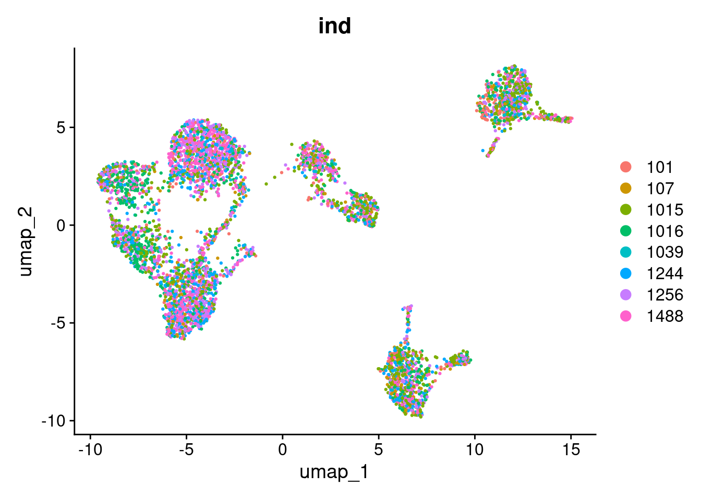
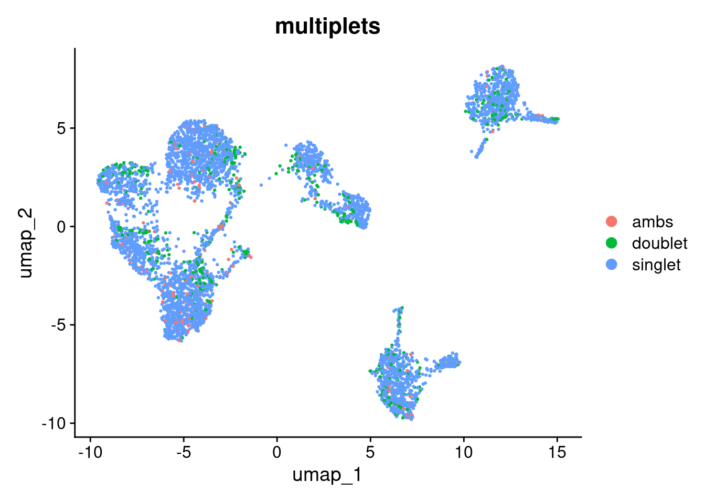
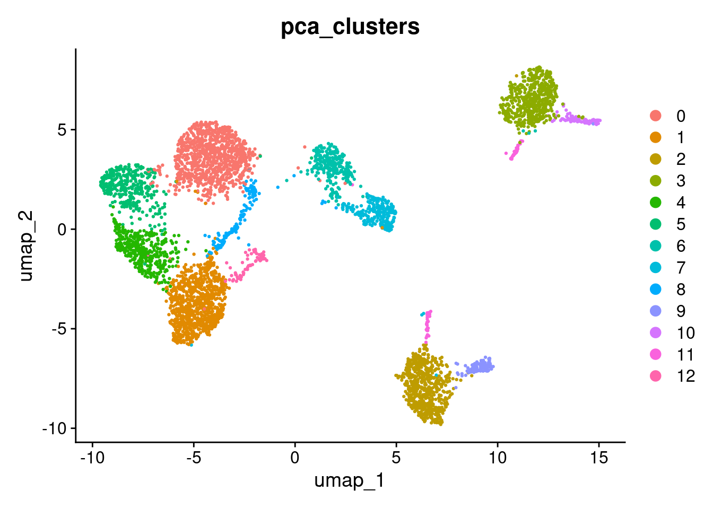
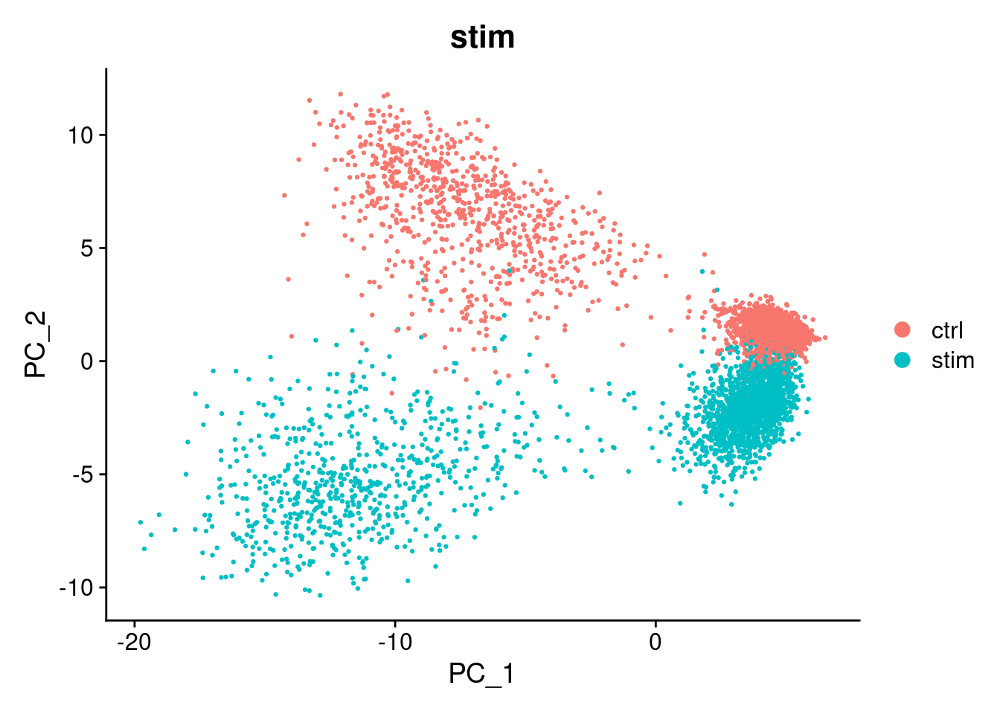
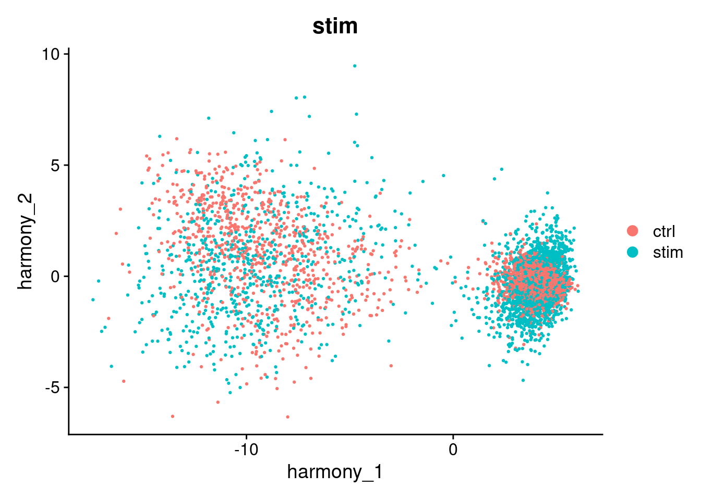
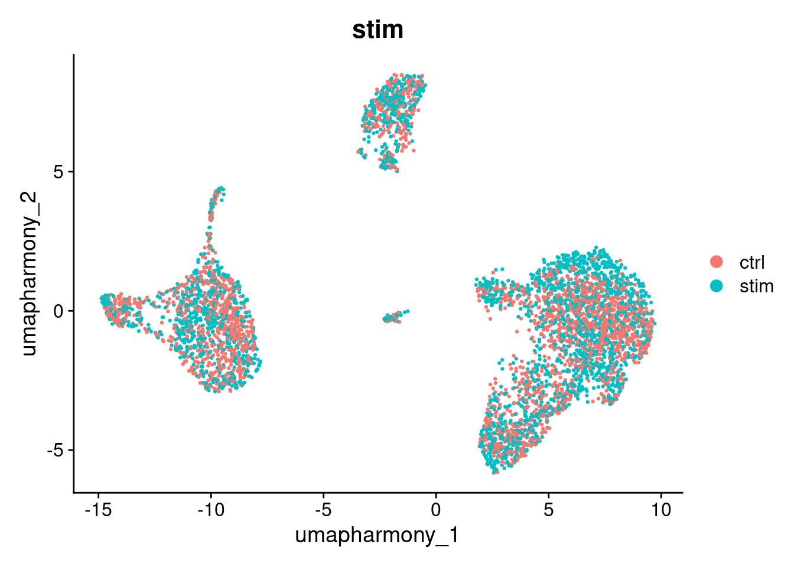
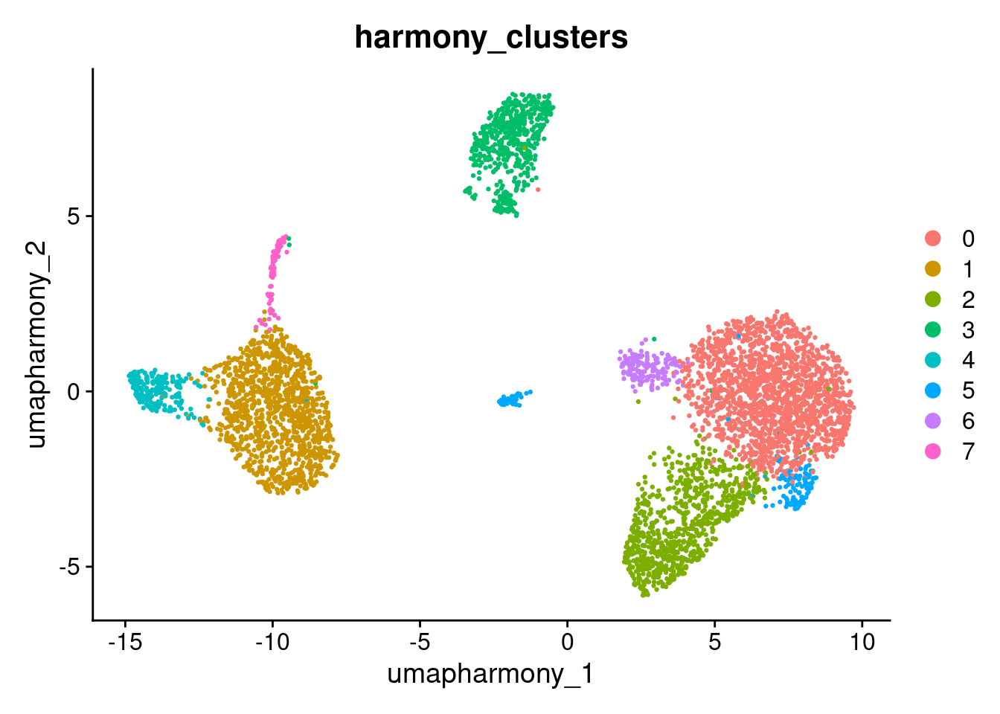
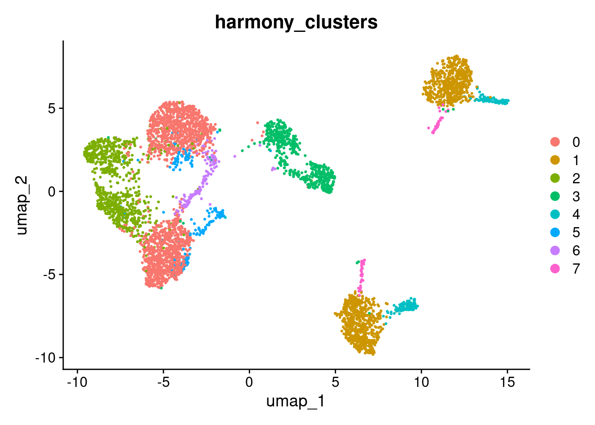

10 Data set integration with Harmony
10.1 Learning outcomes
By the end of this session, you will be able to:
- Recognise when differences between samples or conditions in a UMAP reflect technical variation rather than true biology
- Apply batch correction to produce cell clusters that reflect cell identity rather than experimental batch or conditions
- Assess whether integration has been successful by comparing UMAP plots before and after correction
10.2 Overview
Why do we need this?
You can have data coming from different samples, batches or experiments and you will need to combine them.
When batch effects are present, cells from different samples or conditions will cluster based on technical variation rather than true cell identity. This means two cells of the same type (e.g. one from a control sample and one from a stimulated sample) may appear in separate clusters simply because they were processed differently. This makes it difficult to identify genuine biological differences downstream.
First we will inspect how our cells are clustering by inspecting how they group by the different annotations available.
DimPlot(seurat_object, reduction="umap", group.by="ind")
DimPlot(seurat_object, reduction="umap", group.by="multiplets")
To visualise how cells group together, we will run a basic clustering using the default PCA reduction. We will go into clustering in much more detail in the next section — for now this is just to help us see the effect of batch correction.
seurat_object <- FindNeighbors(seurat_object, reduction="pca", dims=1:10)
#> Computing nearest neighbor graph
#> Computing SNN
seurat_object <- FindClusters(seurat_object, resolution=0.6)
#> Modularity Optimizer version 1.3.0 by Ludo Waltman and Nees Jan van Eck
#>
#> Number of nodes: 4877
#> Number of edges: 171553
#>
#> Running Louvain algorithm...
#> Maximum modularity in 10 random starts: 0.8992
#> Number of communities: 13
#> Elapsed time: 0 seconds
seurat_object$pca_clusters <- seurat_object$seurat_clusters
DimPlot(seurat_object, reduction="umap", group.by="pca_clusters")
Exercise
Use DimPlot(seurat_object, reduction="umap", group.by=<metadata>) to see how they group by control vs. stimulation condition.
Tip: replace <metadata> with "stim".
# Add your code hereThere is a big difference between unstimulated and stimulated cells. This has split cells of the same type into pairs of clusters. If the difference was simply uniform, we could regress it out (e.g. using ScaleData(..., vars.to.regress="stim")). However, as can be seen in the PCA plot, the difference is not uniform and we need to do something cleverer.
We will use Harmony, which can remove non-uniform effects. We will try to remove both the small differences between individuals and the large difference between the unstimulated and stimulated cells.
Harmony operates only on the PCA scores. The original gene expression levels remain unaltered.
library(harmony)
seurat_object <- RunHarmony(seurat_object, c("stim", "ind"), reduction="pca",reduction.save="harmony")
#> Transposing data matrix
#> Initializing state using k-means centroids initialization
#> Harmony 1/10
#> Harmony 2/10
#> Harmony 3/10
#> Harmony 4/10
#> Harmony converged after 4 iterationsThis has added a new set of reduced dimensions to the Seurat object, seurat_object$harmony which is a modified version of the existing seurat_object$pca reduced dimensions. The PCA plot shows a large difference between ‘ctrl’ and ‘stim’, but this has been removed in the harmony reduction.
DimPlot(seurat_object, reduction="pca", group.by="stim")
DimPlot(seurat_object, reduction="harmony", group.by="stim")
We can use harmony the same way we used the pca reduction to compute a UMAP layout or to find clusters.
seurat_object <- RunUMAP(seurat_object, reduction="harmony", dims=1:10, reduction.name="umap_harmony")
#> 02:33:58 UMAP embedding parameters a = 0.9922 b = 1.112
#> 02:33:58 Read 4877 rows and found 10 numeric columns
#> 02:33:58 Using Annoy for neighbor search, n_neighbors = 30
#> 02:33:58 Building Annoy index with metric = cosine, n_trees = 50
#> 0% 10 20 30 40 50 60 70 80 90 100%
#> [----|----|----|----|----|----|----|----|----|----|
#> **************************************************|
#> 02:33:59 Writing NN index file to temp file /tmp/RtmpPwjOur/file55dbb6e1ea0eb
#> 02:33:59 Searching Annoy index using 1 thread, search_k = 3000
#> 02:34:02 Annoy recall = 100%
#> 02:34:04 Commencing smooth kNN distance calibration using 1 thread with target n_neighbors = 30
#> 02:34:07 Initializing from normalized Laplacian + noise (using RSpectra)
#> 02:34:07 Commencing optimization for 500 epochs, with 203852 positive edges
#> 02:34:07 Using rng type: pcg
#> 02:34:14 Optimization finished
DimPlot(seurat_object, reduction="umap_harmony", group.by="stim")
Note that batch correction may not be perfect. However, it is not always a problem.
In this experiment, IFN-beta stimulation is expected to cause genuine transcriptional changes in immune cells. Some separation between ctrl and stim cells after correction may reflect real biology rather than a technical artefact. When interpreting your own results, consider whether residual separation is expected given your experimental design.
Run and display how clusters form between the umap_harmony and umap reductions.
We will explore clustering in more detail in the next section.
seurat_object <- FindNeighbors(seurat_object, reduction="harmony", dims=1:10)
#> Computing nearest neighbor graph
#> Computing SNN
seurat_object <- FindClusters(seurat_object, resolution=0.6)
#> Modularity Optimizer version 1.3.0 by Ludo Waltman and Nees Jan van Eck
#>
#> Number of nodes: 4877
#> Number of edges: 168809
#>
#> Running Louvain algorithm...
#> Maximum modularity in 10 random starts: 0.8463
#> Number of communities: 8
#> Elapsed time: 0 seconds
seurat_object$harmony_clusters <- seurat_object$seurat_clusters
DimPlot(seurat_object, reduction="umap_harmony", group.by="harmony_clusters")
DimPlot(seurat_object, reduction="umap", group.by="harmony_clusters")
Answer in Zoom
Compare the umap and umap_harmony plots coloured by stim. Consider the following:
- Do ctrl and stim cells now share the same clusters in the harmony UMAP, or are they still separated?
- Are there any clusters that remain split by condition? If so, is that separation expected given the experimental design?
- How does the number and shape of clusters differ between the two UMAPs?
Having found a good set of clusters, we would usually perform differential expression analysis on the original data and include batches/runs/individuals as predictors in the linear model. In this example we could now compare un-stimulated and stimulated cells within each cluster. A particularly nice statistical approach that is possible here would be to convert the counts to pseudo-bulk data for the eight individuals, and then apply a bulk RNA-Seq differential expression analysis method. However there is still the problem that unstimulated and stimulated cells were processed in separate batches.
#qs2::qs_save(seurat_object, here("data", "seurat_object_preprocessed.harmony.qs2"))